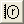
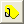

Weitere relevante Videos: Erweiterter Digitalisierer
|
Weitere relevante Videos: Erweiterter Digitalisierer |
Der Digitalisierer hilft Ihnen, Daten aus Bildern der Diagramme zu digitalisieren. Sie können Bilddateien von Diagrammen in Origin importieren und einen Datenpunkt nach dem anderen automatisch digitalisieren.
Um den Digitalisierer zu öffnen, klicken Sie die Schaltfläche Bild digitalisieren  auf der Symbolleiste Standard oder wählen Sie im Hauptmenü Hilfsmittel: Digitalisierer. Der Dialog verfügt über Schaltflächen und Menüs, die der Steuerung dienen. Kontextsensitiver Hinweistext wird unten eingeblendet.
auf der Symbolleiste Standard oder wählen Sie im Hauptmenü Hilfsmittel: Digitalisierer. Der Dialog verfügt über Schaltflächen und Menüs, die der Steuerung dienen. Kontextsensitiver Hinweistext wird unten eingeblendet.
In dem Digitalisierer werden drei Koordinatensysteme unterstützt. Hierbei handelt es sich um das kartesische, ternäre und polare Koordinatensystem. Sobald ein Bild in den Digitalisierer importiert wird, können Sie das Koordinatensystem im Menü des Digitalisierers auswählen.
| Digitalisierer für kartesisches Koordinatensystem | Digitalisierer für ternäres Koordinatensystem |
| Digitalisierer für polares Koordinatensystem | |
|
Öffnen Sie ein Bild in Origin und importieren Sie es in den Digitalisierer. Klicken Sie, um den Dialog für Bilder zu öffnen. Wählen Sie die Bilddatei, die Sie digitalisieren möchten. |
|
|
Importieren Sie das Bild aus der aktuellen Zwischenablage. |
|
|
Drehen Sie das Bild durch Definition der Drehwinkel. |
|
|
Klicken Sie, um den Modus der Achsenposition einzugeben, wenn das kartesische Koordinatensystem gewählt ist. Ziehen Sie die X- und Y-Achse zu bekannten Stellen im Bild und legen Sie diese Stellen und Skalierungstypen in der Tabelle fest. Sie können Strg+Mausrad verwenden, um die Ansicht mitsamt den Scrollbalken zu vergrößern oder zu verkleinern. Klicken Sie erneut, um den Modus der Achsenposition zu verlassen. |
|
|  |
Klicken Sie, um den Modus der Achsenposition zu aktivieren, wenn das polare Koordinatensystem gewählt ist. Klicken Sie erneut, um den Modus der Achsenposition zu verlassen. |
|
Klicken Sie, um den Modus der Achsenposition zu aktivieren, wenn das ternäre Koordinatensystem gewählt ist. Klicken Sie erneut, um den Modus der Achsenposition zu verlassen. |
|
|
Klicken Sie hier, um den Modus Punkte auswählen zu aktivieren. Sie können hierfür die Maus oder die Tastatur verwenden. Drücken Sie Enter oder klicken Sie doppelt mit der Maus, um einen Punkt zu digitalisieren. Klicken Sie zum Fertigstellen auf Fertig. Sie können den Modus Punkte auswählen erneut aktivieren oder andere Modi verwenden, um Punkte zu vorhandenen Daten hinzuzufügen. |
|
|
Klicken Sie, um den Modus Autom. Linienverfolgung nach Punkten zu aktivieren. Sie können doppelt klicken oder Enter drücken, um einen Zielpunkt auf der Kurve auszuwählen und die automatische Verfolgung zu starten. Klicken Sie zum Fertigstellen auf Fertig. Sie können den Modus Autom. Linienverfolgung erneut aktivieren oder andere Modi verwenden, um Punkte zu vorhandenen Daten hinzuzufügen. |
|
|
Klicken Sie, um den Modus Automatische Punktauswahl nach Gitternetzlinien zu aktivieren. Durch einen Klick und darauf folgendes Ziehen am Cursor können Sie den Bereich der Zielpunkte auswählen. Sie können den Modus des Digitalisierungsbereichs erneut aktivieren oder andere Modi verwenden, um Punkte zu vorhandenen Daten hinzuzufügen. |
|
|
Klicken Sie, um den Modus Digitalisierungsbereich automatisch verfolgen zu aktivieren. Durch einen Klick und darauf folgendes Ziehen am Cursor können Sie den Bereich der Zielpunkte auswählen. Sie können den Modus des Digitalisierungsbereichs erneut aktivieren oder andere Modi verwenden, um Punkte zu vorhandenen Daten hinzuzufügen. |
|
|
Klicken Sie, um den Modus Begrenzter Bereich der automatischen Verfolgung zu aktivieren. Durch einen Klick und darauf folgendes Ziehen am Cursor können Sie den Bereich der Zielpunkte auswählen. Sie können den Modus des Digitalisierungsbereichs erneut aktivieren oder andere Modi verwenden, um Punkte zu vorhandenen Daten hinzuzufügen. |
|
|
Klicken Sie hier, um den Modus Punkte löschen zu aktivieren. Durch einen Klicken und darauf folgendes Ziehen am Cursor können Sie alle ausgewählten Datenpunkte innerhalb des Bereichs löschen. |
|
|
Klicken Sie, um alle ausgewählten Punkte neu zu ordnen, so dass die X- oder Theta-Werte in aufsteigender Reihenfolge angeordnet sind. |
|
|  |
Klicken Sie diese Schaltfläche, um den Modus Beschriftung zu aktivieren. Kicken Sie doppelt auf einen digitalisierten Punkt, um eine Textbeschriftung hinzuzufügen. Klicken Sie erneut, um den Modus Beschriftung zu verlassen. Diese Schaltfläche ist nur verfügbar, wenn die Auswahl der Punkte fertiggestellt ist. |
|
Beginnen Sie, eine neue Reihe von Datenpunkten auszuwählen. Auf diese Weise werden neue Ausgabespalten erstellt und auch eine neue Linie auf der Registerkarte Daten. Passen Sie, falls nötig, die Achsen an und klicken Sie auf Neue Punkte auswählen, um neue Daten zu digitalisieren. |
|
|
Löschen Sie die aktuelle aktive Linie auf der Registerkarte Daten. |
|
|
Wechseln Sie zum Ergebnisblatt, das die Koordinatenwerte der ausgewählten Datenpunkte enthält. |
|
|
Wechseln Sie zum Originalbild. |
|
|
Wechseln Sie zu dem Diagramm, das aus den ausgewählten Datenpunkten erzeugt wurde. |
|
|
Löschen Sie alle digitalisierten Punkte, Arbeitsblätter und Diagramme. |
Sie können die globalen Optionen für den Digitalisierer im Dialog Optionen festlegen. Um den Dialog über Einstellungen: Optionen öffnen.
Im Zweig Symbole können Sie die Farbe, das Symbol und die Größe der ausgewählten Daten benutzerdefiniert anpassen und auch den Namen des Ergebnisblatts bestimmen:
| Ergebnisblattname | Geben Sie den Namen des Ergebnisblatts, das die Koordinatenwerte der ausgewählten Datenpunkte enthält, ein. |
|---|---|
| Farbe | Wählen Sie die Farbe der ausgewählten Datenpunkte aus. |
| Symbol | Wählen Sie die Symbolform der ausgewählten Datenpunkte aus. |
| Größe | Geben Sie die Größe der ausgewählten Datenpunkte aus bzw. geben Sie sie ein. |
Die Zweige Hilfsstrichsbeschriftungen der X-Achse und Hilfsstrichsbeschriftungen der Y-Achse sind nur verfügbar, wenn das Koordinatensystem auf Kartesisch gesetzt ist. Es werden drei Formate für die Hilfsstrichsbeschriftungen unterstützt: Numerisch, Zeit und Datum. Für die letzten beiden Formate können Sie die Anzeige im Auswahlmenü Anzeige weiter benutzerdefiniert anpassen.
Sie können entweder eine Bilddatei importieren oder aus der Zwischenablage importieren. Um dies zu tun:
oder
Hinweis: Wenn das aktive Fenster ein Bildfenster mit einem importierten Bild ist, können Sie die Tastenkombination Strg + C drücken, um das Bild in die Zwischenablage zu kopieren und es dann in den Digitalisierer zu importieren, indem Sie auf die Schaltfläche Aus Zwischenablage importieren klicken.
Sie können ein importiertes Bild auf die Verarbeitung vorbereiten, um die spätere Digitalisierung einfacher zu machen. Dazu gehören das Drehen und Entfernen von Gitternetzlinien und das Löschen des Hintergrunds.
Um ein Bild zu drehen, klicken Sie auf die Schaltfläche Bild drehen  oder wählen Sie Bild: Drehen im Hauptmenü des Digitalisierers. Der Dialog Bild drehen wird geöffnet.
oder wählen Sie Bild: Drehen im Hauptmenü des Digitalisierers. Der Dialog Bild drehen wird geöffnet.
| Drehwinkel (Grad) |
Geben Sie hier den Wert ein, um den das Bild gedreht werden soll, bzw. geben Sie ihn ein. |
|---|---|
|
Klicken Sie diese beiden Schaltflächen, um das Bild mit oder entgegen dem Uhrzeigersinn zu drehen. Das Inkrement für die Drehung kann im Feld << >> Inkrement (Grad) bestimmt werden. |
|
| << >> Inkrement (Grad) |
Bestimmen Sie den Wert des Inkrements (Grad), um den das Bild gedreht wird,wenn Sie auf die Schaltfläche |
| Hinweis: Sobald Sie anfangen, Punkt auszuwählen, können Sie das Bild nicht mehr drehen. |
Diese Option wird verwendet, um die Gitternetzlinien in dem ursprünglichen Bild zu entfernen, so dass die Datenzeichnung selbst deutlicher angezeigt wird. Dazu klicken Sie auf Bild: Gitternetzlinien entfernen.
Diese Option wird verwendet, um die Hintergrundfarbe (sollte nicht weiß sein) und andere Rauschpunkte zu löschen. Dazu klicken Sie auf Bild: Hintergrund löschen.
|
Sie können entweder den vorhergehenden Schritt des Bildprozesses rückgängig machen, indem Sie auf Bild: Rückgängig klicken, oder den gesamten Bildverarbeitungsprozess, indem Sie auf Bild: Zurücksetzen klicken. |
Sobald ein Bild in den Digitalisierer importiert wird, wird standardmäßig das kartesische Koordinatensystem für die Achsen gewählt. Um das Koordinatensystem zu ändern, klicken Sie auf das Menü Achsen und wählen Sie das entsprechende Koordinatensystem.
Wenn Sie das polare oder ternäre Koordinatensystem wählen, müssen Sie zuerst einige grundlegende Einstellungen für die Koordinate in den Dialogen Einstellungen der Polarkoordinaten oder Ternäre Koordinateneinstellungen festlegen.
Sobald Sie im Menü auf Achsen: Polare Koordinaten klicken, wird dieser Dialog aufgerufen.
In diesem Dialog müssen Sie die Achsenausrichtung in dem importierten Bild definieren, entweder gegen den Uhrzeigersinn oder im Uhrzeigersinn.
Außerdem müssen Sie die Winkeleinheiten definieren (d.h. Theta-Einheiten). Die unterstützten Einheiten sind Grad, Radiant und Gon.
Sobald Sie im Menü auf Achsen: Ternäre Koordinaten klicken, wird dieser Dialog aufgerufen.
In diesem Dialog müssen Sie die Achsenausrichtung in dem importierten Bild definieren, entweder gegen den Uhrzeigersinn oder im Uhrzeigersinn.
Außerdem müssen Sie den Bereich der Variablen definieren, entweder von 0 bis 1 oder von 0 bis 100.
Um Datenpunkte zu digitalisieren, müssen wir das Koordinatensystem erstellen.
Wenn das kartesische Koordinatensystem gewählt und die Schaltfläche gedrückt ist, werden zwei Paare Achsenlinien (X1, Y1 und X2, Y2) im Bild angezeigt. Diese beiden Paare können durch die rote bzw. blaue Farbe unterschieden werden. Sie können auf jede Zelle in der Spalte Farbe klicken, um die Farbe dieser Linie zu ändern. Wenn eine Linie ausgewählt wird, wird ihre entsprechende Zeile im Dialog ebenfalls ausgewählt. Umgekehrt gilt das gleiche. Ziehen Sie die Linie zu bekannten Koordinaten im Bild und geben Sie anschließend die Koordinatenwerte in die Spalte Achsenwert ein. Die Spalte Bildpixel zeigt die Position der Linien im Bild anhand der Pixel. Das Hilfsmittel unterstützt drei Typen der Achsenskalierung: Linear, Log10 und Ln. Sie können die Option in der Spalte Skalierungstyp basierend auf der Achsenskalierung im Bild wechseln.
Sie können eine X/Y-Referenzlinie in dem Bild zeigen, um die Achseneinstellungen zu verifizieren, indem Sie auf Achsen: X-Referenzlinie zeigen oder Achsen: Y-Referenzlinie zeigen klicken. Ziehen Sie diese Linie zu bekannten Koordinaten und prüfen Sie dann, ob der digitalisierte Wert in der Spalte Achsenwert mit dem tatsächlichen Koordinatenwert an der Position der Referenzlinie im Bild übereinstimmt.
Wenn das polare Koordinatensystem gewählt und die Schaltfläche geklickt ist, werden zwei Punktpaare (P1, P2 und P3, P4) im Bild als Referenz angezeigt. Ziehen Sie die Punkte an eine bekannte Position im Bild. Jedes Paar muss sich im gleichen Azimutwinkel (d.h. folgt einer Radiuslinie) befinden. Geben Sie dann die Koordinatenwerte in die Theta- und Radius-Spalten ein. Die Spalte Bildpixel zeigt die Position der Punkte im Bild anhand der Pixel.
Wenn das ternäre Koordinatensystem gewählt und die Schaltfläche  geklickt ist, werden drei Referenzpaare (P1, P2 und P3) im Bild gezeigt. Ziehen Sie die Punkte zu den Vertizes des ternären Diagramms. Sie können die Koordinaten eines anderen Vertexes in der Auswahlliste der Spalte Achsenwert wählen. Die Spalte Bildpixel zeigt die Position der Punkte im Bild anhand der Pixel.
geklickt ist, werden drei Referenzpaare (P1, P2 und P3) im Bild gezeigt. Ziehen Sie die Punkte zu den Vertizes des ternären Diagramms. Sie können die Koordinaten eines anderen Vertexes in der Auswahlliste der Spalte Achsenwert wählen. Die Spalte Bildpixel zeigt die Position der Punkte im Bild anhand der Pixel.
Klicken Sie mit der rechten Maustaste auf die Achse, um die Achseneinstellungen als *.ois-Datei zu speichern, und diese *.ois-Datei zu laden, damit die Achseneinstellungen angewendet werden können.
Nach Einrichten der Achsen können Sie Datenpunkte aus der/n Datenzeichnung/en im Bild auswählen. Es gibt mehrere Methoden, um das zu tun:
Nachdem Sie Datenpunkte ausgewählt haben, können Sie die Datenpunkte neu ordnen, sie löschen, Beschriftungen hinzufügen oder anfangen, Datenpunkte für eine neue Datenzeichnung auszuwählen.
Sie können Datenpunkte an beliebigen Positionen einen nach dem anderen manuell auswählen. Dazu klicken Sie auf die Schaltfläche Punkte manuell auswählen  oder wählen im Menü Digitalisieren: Punkte manuell auswählen. Verschieben Sie den Cursor über den gewünschten Datenpunkt in dem Bild, und er gleichzeitig in dem Feld Lupe im Digitalisierer gezeigt. Sie können dann den Scrollbalken auf der rechten Seite anpassen, um die Datenpunkte zu vergrößern und einfacher und genauer den Datenpunkt lokalisieren zu können.
oder wählen im Menü Digitalisieren: Punkte manuell auswählen. Verschieben Sie den Cursor über den gewünschten Datenpunkt in dem Bild, und er gleichzeitig in dem Feld Lupe im Digitalisierer gezeigt. Sie können dann den Scrollbalken auf der rechten Seite anpassen, um die Datenpunkte zu vergrößern und einfacher und genauer den Datenpunkt lokalisieren zu können.
Klicken Sie danach doppelt oder drücken Sie auf Enter, um den Punkt auszuwählen. Die Koordinatenwerte dieses Datenpunkts werden im Dialog Punkte holen angezeigt, während sie in Bildpixeln im Fenster Datenanzeige gezeigt werden. Sie können auch ausgewählte Datenpunkte löschen und bearbeiten.
Wenn Sie mit der Auswahl von Datenpunkten fertig sind, können Sie auf die Schaltfläche Fertig Im Dialog Punkte holen klicken, so dass die digitalisierte Linien im mittleren Bedienfeld auf der Registerkarte Daten gezeigt wird. Sie können den ausgewählten Datensatz jetzt neu ordnen oder Beschriftungen zu ihm hinzufügen, bevor Sie ausgewählte Punkte in einem Arbeitsblatt ausgeben.
Wenn die Automatische Linienverfolgung aktiviert ist und ein Datenpunkt als Zielpunkt ausgewählt ist, werden die anderen Datenpunkte in der gleichen Kurve (oder genauer, der gleiche Teil der Kurve) automatisch verfolgt und ausgewählt.
Klicken Sie auf die Schaltfläche oder klicken Sie auf Digitalisieren: Automatische Linienverfolgung nach Punkten im Menü, um dies zu nutzen. Wählen Sie dann einen Zielpunkt aus dem Bild aus, indem Sie doppelt auf ihn klicken. Wenn Sie fertig sind, klicken Sie auf die Schaltfläche Fertig oder Strg+Enter.
|
Im Vorschaufenster des Digitalisierers gibt es eine Lupe, wenn Automatische Linienverfolgung aktiviert ist. Wenn Sie den Cursor über das Bild bewegen, wird ein Hinweis oberhalb dieses Fensters angezeigt, der besagt, ob der Punkt bei der aktuellen Position ein gültiger Zielpunkt ist oder nicht. |
Verwenden Sie das Objekt des Digitalisierungsbereich (ein rechteckiges Objekt mit Gitternetzlinien in entweder X- oder Y-Richtung), um Datenpunkte automatisch auszuwählen. Die Datenpunkte, die sich mit Gitternetzlinien überschneiden, werden ausgewählt und übernommen.
Klicken Sie auf die Schaltfläche oder gehen Sie im Menü über Digitalisieren: Automatische Punktauswahl nach Gitternetzen, um dieses Hilfsmittel zu aktivieren, und klicken Sie dann in das ursprüngliche Bild und ziehen Sie an dem Cursor, um den Bereich der Zielpunkte auszuwählen.
Verwenden Sie das Objekt des Digitalisierungsbereichs (ähnlich dem im Modus Automatische Punktauswahl nach Gitternetzen verwendeten), um Datenpunkte automatisch auszuwählen. Wenn Sie diesen Modus verwenden, werden die Datenpunkte, die sich mit Gitternetzlinien überschneiden, zuerst ausgewählt und übernommen. Danach werden diese Datenpunkte als Quellpunkte verwendet, um die Linie automatisch zu verfolgen (siehe Automatische Linienverfolgung nach Punkten).
Klicken Sie auf die Schaltfläche  oder gehen Sie im Menü über Digitalisieren: Bereich der autom. Verfolgung, um dieses Hilfsmittel zu aktivieren, und klicken Sie dann und ziehen Sie an dem Cursor, um den Bereich der Zielpunkte auszuwählen.
oder gehen Sie im Menü über Digitalisieren: Bereich der autom. Verfolgung, um dieses Hilfsmittel zu aktivieren, und klicken Sie dann und ziehen Sie an dem Cursor, um den Bereich der Zielpunkte auszuwählen.
Verwenden Sie das Objekt des Digitalisierungsbereichs (ähnlich dem im Modus Automatische Punktauswahl nach Gitternetzen verwendeten), um Datenpunkte automatisch auszuwählen. Dieser Modus funktioniert ähnlich wie der Modus Bereich der autom. Verfolgung mit der Ausnahme, dass die Linie, die automatisch verfolgt wird, eine Grenze hat, die über das Objekt des Digitalisierungsbereichs definiert wird.
Klicken Sie auf die Schaltfläche oder gehen Sie im Menü über Digitalisieren: Begrenzter Bereich der autom. Verfolgung, um dieses Hilfsmittel zu aktivieren, und klicken Sie dann und ziehen Sie an dem Cursor, um den Bereich der Zielpunkte auszuwählen.
Um die Richtung der Gitternetze und die Dichte des Objekts des Digitalisierungsbereichs zu ändern, können Sie im Menü Einstellungen: Digitalisierungseinstellungen auswählen und die Einstellungen im Dialog Digitalisierungseinstellungen im Voraus vornehmen:
| Gitternetze |
Legen Sie die Richtung des Gitternetzes fest.
|
|---|---|
| dx (Pixel) | Geben Sie den Abstand zwischen den zwei benachbarten Gitternetzlinien in Pixel ein. Der minimal mögliche Wert beträgt 1. |
| Reduktionsfaktor für Pixel | Legen Sie den Reduktionsfaktor für Pixel des Digitalisierers fest. |
Klicken Sie nach dem Digitalisieren auf Fertig, um zum Dialog des Digitalisierers zurückzukehren. Für alle ausgewählten Datenpunkte im Bild können Sie:
| Hinweis: Sie können während des Digitalisierens gewählte Datenpunkte nicht bearbeiten oder löschen. Wenn Sie während des Digitalisierens Esc drücken, werden die vorherige Auswahl gelöscht und der Digitalisierer zurückgesetzt. |
|
Sie können auch die Schaltfläche verwenden. Klicken Sie auf sie und ziehen Sie am Cursor, um alle ausgewählten Datenpunkte innerhalb des Rechtecks zu löschen. |
Die Datenpunkte, die kartesischen oder polaren Koordinatensystem ausgewählt wurden, können Sie neu ordnen, so dass sich die X- oder Theta-Werte in aufsteigender Reihenfolge befinden.
Aktivieren Sie das ursprüngliche Bild, klicken Sie auf die Schaltfläche  oder wählen Sie Digitalisieren: Punkte neu ordnen.
oder wählen Sie Digitalisieren: Punkte neu ordnen.
Um den Daten Beschriftungen hinzuzufügen, klicken Sie auf die Schaltflächen Beschriftungen festlegen oder im Menü auf Digitalisieren: Beschriftung festlegen, klicken Sie doppelt auf einen Datenpunkt und geben den Beschriftungstext ein. Klicken Sie auf OK, um die Beschriftung hinzuzufügen. Beachten Sie, dass Datenpunkte mit Beschriftungen jetzt grün angezeigt werden.
Um Punkte aus einer neuen Datenzeichnung auszuwählen, klicken Sie auf die Schaltfläche Neue Linie  oder wählen Sie Digitalisieren: Neue Linie aus. Sie können im mittleren Bedienfeld auf der Registerkarte Daten doppelt auf die Zelle in Datenname klicken, um den Namen des ausgewählten Datensatzes zu ändern, und eine Gruppe in der Auswahlliste Achse wählen. Um einen ausgewählten Datensatz auf der Registerkarte Daten zu entfernen, klicken Sie mit der rechten Maustaste auf diese Linie und wählen Sie Linie löschen.
oder wählen Sie Digitalisieren: Neue Linie aus. Sie können im mittleren Bedienfeld auf der Registerkarte Daten doppelt auf die Zelle in Datenname klicken, um den Namen des ausgewählten Datensatzes zu ändern, und eine Gruppe in der Auswahlliste Achse wählen. Um einen ausgewählten Datensatz auf der Registerkarte Daten zu entfernen, klicken Sie mit der rechten Maustaste auf diese Linie und wählen Sie Linie löschen.
Wenn Sie mehrere ausgewählte Datensätze in einem einzigen Datensatz zusammenfügen wollen, halten Sie die STRG-Taste gedrückt, um gewünschte Datensätze auszuwählen, und klicken Sie mit der rechten Maustaste, um Linien zusammenfügen auszuwählen, oder klicken Sie auf Digitalisieren: Linien zusammenfügen.
Wenn Sie unerwünschte Datenzeichnungen auf der Registerkarte Daten löschen möchten, halten Sie die STRG-Taste gedrückt, um die entsprechenden Zeilen der unerwünschten Datensätze auszuwählen, und klicken Sie auf Digitalisieren: Linie löschen oder die Schaltfläche .
Sobald Sie die Achse eingerichtet und die Punkte ausgewählt haben, können Sie die Koordinatenwerte der ausgewählten Datenpunkte in einem Arbeitsblatt oder Diagramm ausgeben.
|
Wenn Sie den Dialog des Digitalisierers schließen, wird die Schaltfläche auf dem Bild angezeigt. Klicken Sie auf diese Schaltfläche, um den Digitalisierer erneut zu öffnen. |